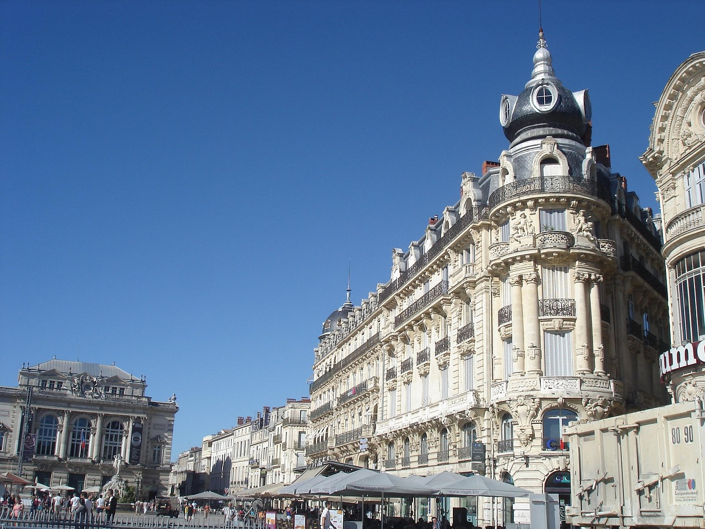
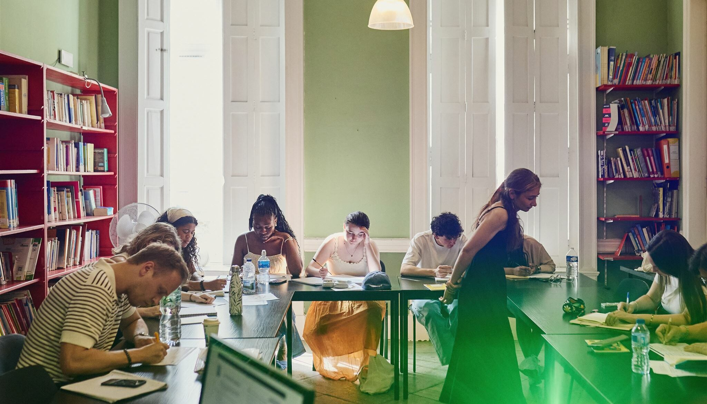

5 French words
you'll need
this autumn.
Straight from Montpellier, where autumn still feels like summer.
Save this for your French class

nom féminin
la rentrée
[la ʁɑ̃tʁe]
back to school, back to work
« Bonne rentrée à tous ! »
"Happy back-to-school, everyone!" — what the whole of France says in September.

nom féminin pluriel
les vendanges
[le vɑ̃dɑ̃ʒ]
the grape harvest
« En octobre, on finit les vendanges dans le Languedoc. »
"In October, the grape harvest wraps up in the Languedoc."
expression
les feuilles mortes
[le fœj mɔʁt]
fallen leaves
« Les feuilles mortes se ramassent à la pelle. »
"Fallen leaves are gathered by the shovelful." — Jacques Prévert, the most famous autumn line in French.
nom féminin
une châtaigne
[yn ʃatɛɲ]
a chestnut
« Un cornet de châtaignes grillées, place de la Comédie. »
"A paper cone of roasted chestnuts on Place de la Comédie."
mot du Sud
la tramontane
[la tʁamɔ̃tan]
the cold north wind of the Languedoc
« La tramontane souffle, sors ton pull ! »
"The tramontane is blowing, get your jumper out!"
Learn French
in the sunniest
city in France.
Courses all year · Levels A1 to C2
klf.fr/montpellier →